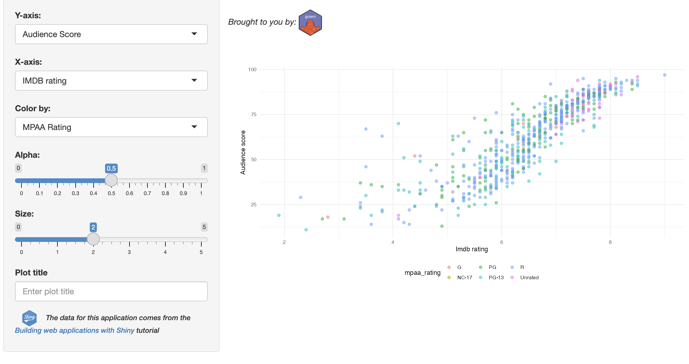

install.packages("golem")
library(golem)golem
 The
The golem framework
The
golemframework has excellent documentation in the Engineering Production-Grade Shiny Apps book and the package website.golemapp-packages come ‘pre-packaged’ with UI, server, and standalone app functionsThe
dev/scripts help guide app setup, development, and deploymentDevelopment is assisted by variety of helper functions for creating modules, utility functions, js, css, etc.
Functions and files have consistent naming conventions (
mod_,fct_,utils_, etc.)Custom functions for including external resources (in the
inst/appfolder)New
golemapp-packages come with boilerplate tests- Helper functions include a
with_testargument for creating tests along with new modules and utility functions
- Helper functions include a
This chapter walks through building a version of the moviesApp with the golem framework. The resulting app-package (gap) is in the fw_gap branch.
After checking out the fw_gap branch, be sure to load, document, and install the application.
Ctrl/Cmd + Shift + L / D / B
gap (a golem app-package)
gap exports the movies data and the standalone app function, run_app().
library(gap)
gap::run_app()
gap movies appgap, launch the movies with run_app()In the sections below, I’ll note various features and workflows that differ from standard package (or app-package) development.
dev scripts
New golem apps have a dev/ folder with scripts for setting up your application, development, and launching/deploying.
dev
├── 01_start.R
├── 02_dev.R
└── 03_deploy.RThe package website has each script available in vignettes: 01_start, 02_dev, 03_deploy
Set up
The dev/01_start.R file opens when the new golem app-package launches. Following the steps in 01_start.R sets up the following files, folders, and options in your golem app-package:
DESCRIPTION:golemhas a custom function for entering many of the fields we covered in the Packages chapter 1golemhas functions that automatically set multiple options in thegolem-config.yml2 and package dependencies 3usethisfunctions are called for aLICENSE4, creating (and building5) aREADME6 aCODE_OF_CONDUCT.md7, adding a Lifecycle badge8, and theNEWS.mdfile.9 Many of these functions and files are covered in the Whole App Game chapter.If you aren’t using Git, there’s an option to initiate a Git repo 10
The testing infrastructure is set up using the custom
golem::use_recommended_tests()function, which creates the necessarytestthatfolders we covered in the Test suite chapter 11, but also adds a collection of boilerplate tests.golemapps also have custom functions for creating a series of UI 12 and server 13 utility functions (and their accompanying tests).
Development
After setting up the golem app-package with dev/01_start.R, the dev/02_dev.R file opens and contains the following functions/options for developing your application.
- Package dependencies: imports are managed with the
attachmentpackage14
- Code files: new code files in
golemapps can be created with a variety of helper functions.
- Modules:
add_module()adds a.Rfile with amod_prefix (an optional test can be included with thewith_test = TRUEargument) - Utility functions: utility functions can be added with
add_utils()oradd_fct()(also include thewith_testoption for tests).golem_utils_*files contain commonly used UI and server functions. - The primary app UI and server functions are stored in
R/app_ui.RandR/app_server.R. - The standalone app function is stored in
R/run_app.R. R/_disable_autoload.Rdisablesshiny::loadSupport()(an option we covered in the Launch chapter)R/app_config.Rcontains configuration functions:
app_sys()is a wrapper forsystem.file()get_golem_config()reads environment variables (i.e.,GOLEM_CONFIG_ACTIVE) and the contents ofinst/golem-config.yml:
- Modules:
R
├── _disable_autoload.R
├── app_config.R
├── app_server.R
├── app_ui.R
├── data.R
├── golem_utils_server.R
├── golem_utils_ui.R
├── mod_scatter_display.R
├── mod_var_input.R
├── utils_mod_scatter_display.R
├── utils_tests.R
└── run_app.R
1 directory, 11 files- 1
-
Turn off
loadSupport()
- 2
- Configure app functions
- 3
-
App UI and server functions
- 4
-
Data documentation
- 5
-
golemutility functions
- 6
-
Scatter plot module
- 7
- Variable input module
- 8
-
Scatter plot utility function (
scatter_plot()) - 9
-
Test utility function (
test_logger()) - 10
- Standalone app function
- External files: adding external files is handled with
golem_add_external_resources(), which uses the same methods we covered in the External files chapter.15
WORDLIST: includes the word ‘golem’ and is an artifact fromspellcheckargument inuse_recommended_tests(). 16app/contains the application files. 17extdata/contains the external data files. 18golem-config.ymlis used to set various configuration options. 19
inst
├── WORDLIST
├── app
│ └── www
│ ├── favicon.ico
│ ├── golem-hex.png
│ └── shiny.png
├── extdata
│ ├── movies.RData
│ └── tidy_movies.fst
└── golem-config.yml
4 directories, 7 files- Data: the data in
golemapp-packages function like the data folder and files in a standard R package we covered in the Data chapter.
data/: contains themovies.rdafile used in the applicationdata-raw/:movies.Rreads indata-raw/movies.RDataand createsdata/movies.rda
tidy_movies.Rreads in theggplot2movies::moviesdata and creates theinst/extdata/tidy_movies.fstdata.
data
└── movies.rda
1 directory, 1 filedata-raw
├── movies.R
├── movies.RData
└── tidy_movies.R
1 directory, 2 files- Documentation: the
roxygen2documentation ingolemapp-package files comes with boilerplate tags and descriptions similar to those covered in the Documentation chapter.
man/: By default, modules created withadd_module()aren’t exported 20vignettes/: Package vignettes ingolemapp-packages operate like vignettes in standard R packages.
man
├── app_server.Rd
├── app_ui.Rd
├── golem_add_external_resources.Rd
├── mod_scatter_display_server.Rd
├── mod_scatter_display_ui.Rd
├── mod_plot_ui.Rd
├── mod_var_input_server.Rd
├── mod_var_input_ui.Rd
├── movies.Rd
├── run_app.Rd
├── scatter_plot.Rd
└── test_logger.Rd
1 directory, 12 files- 1
-
Primary UI and server functions (‘pre-packaged’ in
golemapps) - 2
-
External resources utility function (‘pre-packaged’ in
golemapps)
- 3
- Modules
- 4
- Data documentation
- 5
-
The ‘pre-packaged’ standalone app function (only export from
golemapps)
- 6
-
Plot utility function (exported from
gap)
- 7
- Test utility function
vignettes/
└── tests_and_coverage.Rmd
1 directory, 1 fileTests
golem applications provide a lot of boilerplate tests.
- Tests: The testing framework for
golemapp-packages is set up withgolem::use_recommended_tests()in thedev/01_start.Rscript.21
- A
tests/README.mdfile is created by thecovrpagepackage 22 tests/spelling.Radds functionality from thespellingpackage 23testthat: The twogolemutility function files (golem_utils_server.R, andgolem_utils_ui.R) have accompanying tests files.
- The
with_testargument creates test files for modules and utility functions. 24
- The
- A
tests
├── README.md
├── spelling.R
├── testthat
│ ├── _snaps
│ ├── fixtures
│ │ ├── make-tidy_ggp2_movies.R
│ │ └── tidy_ggp2_movies.rds
│ ├── helper.R
│ ├── setup-shinytest2.R
│ ├── test-app-feature-01.R
│ ├── test-golem-recommended.R
│ ├── test-golem_utils_server.R
│ ├── test-golem_utils_ui.R
│ ├── test-mod_scatter_display.R
│ ├── test-mod_var_input.R
│ ├── test-shinytest2.R
│ └── test-utils_mod_scatter_display.R
└── testthat.R
4 directories, 15 files- 1
-
Created from
covrpagepackage
- 2
-
Created from spelling package
- 3
-
Test fixtures
- 4
-
Test helpers
- 5
-
Setting up
shinytest2
- 6
-
shinytest2feature test
- 7
-
Created with:
golem::use_recommended_tests() - 8
-
Created with:
golem::use_utils_ui(with_test = TRUE) - 9
-
Created with:
golem::use_utils_server(with_test = TRUE) - 10
-
Created with:
golem::add_module(name = 'scatter_display',with_test = TRUE) - 11
-
Created with:
golem::add_module(name = 'var_input',with_test = TRUE) - 12
-
Test recording from
shinytest2::record_test()
- 13
-
Utility function test (
scatter_plot())
I’ve converted the tests from the previous chapters for the modules and utility functions in gap:
Unit tests
test-golem-recommended.R
devtools:::test_active_file()[ FAIL 0 | WARN 0 | SKIP 0 | PASS 11 ]test-golem_utils_server.R
devtools:::test_active_file()[ FAIL 0 | WARN 0 | SKIP 0 | PASS 13 ]test-golem_utils_ui.R
devtools:::test_active_file()[ FAIL 0 | WARN 0 | SKIP 0 | PASS 51 ]- The tests for
scatter_plot()is in thetest-utils_mod_scatter_display.Rfile.
devtools:::test_active_file()[ FAIL 0 | WARN 0 | SKIP 0 | PASS 0 ]
INFO [2023-11-07 13:30:24] [ START fixture = tidy_ggp2_movies.rds]
[ FAIL 0 | WARN 0 | SKIP 0 | PASS 1 ]
INFO [2023-11-07 13:30:24] [ START fixture = tidy_ggp2_movies.rds]
INFO [2023-11-07 13:30:24] [ START data = movies.rda]
[ FAIL 0 | WARN 0 | SKIP 0 | PASS 2 ]
INFO [2023-11-07 13:30:24] [ END data = movies.rda]Module tests
The communication between mod_var_input_server() and mod_scatter_display_server() are in test-mod_var_input.R and test-mod_scatter_display.R.
test-mod_var_input.R
devtools:::test_active_file()[ FAIL 0 | WARN 0 | SKIP 0 | PASS 0 ]
INFO [2023-11-07 13:34:42] [ START input = initial inputs returned()]
[ FAIL 0 | WARN 0 | SKIP 0 | PASS 1 ]
INFO [2023-11-07 13:34:42] [ END input = initial inputs returned()]test-mod_scatter_display.R
devtools:::test_active_file()[ FAIL 0 | WARN 0 | SKIP 0 | PASS 0 ]
INFO [2023-11-07 13:36:51] [ START fixture = tidy_ggp2_movies.rds]
[ FAIL 0 | WARN 0 | SKIP 0 | PASS 1 ]
INFO [2023-11-07 13:36:51] [ START fixture = tidy_ggp2_movies.rds]
INFO [2023-11-07 13:36:51] [ START data = movies.rda]
[ FAIL 0 | WARN 0 | SKIP 0 | PASS 2 ]
INFO [2023-11-07 13:36:51] [ END data = movies.rda]System tests
The two system tests are in test-shinytest2.R and test-app-feature-01.R:
test-shinytest2.Ris the initial resulting test fromshinytest2::record_test()covered in System tests
devtools:::test_active_file()These let us know the initial snapshots are saved in tests/testthat/_snaps/
[ FAIL 0 | WARN 2 | SKIP 0 | PASS 1 ]
── Warning (test-shinytest2.R): {shinytest2} recording: feature-01 ──
Adding new file snapshot: 'tests/testthat/_snaps/feature-01-001_.png'
── Warning (test-shinytest2.R): {shinytest2} recording: feature-01 ──
Adding new file snapshot: 'tests/testthat/_snaps/feature-01-001.json'
[ FAIL 0 | WARN 2 | SKIP 0 | PASS 1 ]test-app-feature-01.Rcontains feature tests, and the snapshot warnings display theScenariodescriptions:
devtools:::test_active_file()[ FAIL 0 | WARN 4 | SKIP 0 | PASS 2 ]
── Warning (test-app-feature-01.R):
Scenario A: Change dropdown values for plotting
Given the movie review application is loaded
When I choose the variable [critics_score] for the x-axis
And I choose the variable [imdb_num_votes] for the y-axis
And I choose the variable [genre] for the color:
Then the scatter plot should show [critics_score] on the x-axis
And the scatter plot should show [imdb_num_votes] on the y-axis
And the points on the scatter plot should be colored by [genre] ──
Adding new file snapshot: 'tests/testthat/_snaps/feature-01-senario-a-001_.png'
── Warning (test-app-feature-01.R):
Scenario B: Change dropdown values for plotting
Given the movie review application is loaded
When I choose the size of the points to be [3]
And I choose the opacity of the points to be [0.7]
And I enter '[New plot title]' for the plot title:
Then the size of the points on the scatter plot should be [3]
And the opacity of the points on the scatter plot should be [0.7]
And the title of the plot should be '[New plot title]' ──
Adding new file snapshot: 'tests/testthat/_snaps/feature-01-senario-b-001_.png'
[ FAIL 0 | WARN 4 | SKIP 0 | PASS 2 ]Deployment
When you’re ready to deploy your golem app dev/03_deploy.R file contains a ‘pre deployment checklist’ and multiple options.
golem features
golems helper functions and dev scripts make application development fast–I was able to create gap quickly, and all of the supporting packages (covrpage, attachment, spelling) make the development process faster/easier:
- I created the two modules (
mod_plotandmod_var) withadd_module(), the utility function withadd_utils()
- I added the modules to the
app_ui()andapp_server()
- I moved images into
inst/app/www/
- The movies data was added to
inst/extdata/, then read intodata/folder with thedata-raw/movies.Rfile. - I re-ran the
attachment::att_amend_desc()to capture any dependencies
- Finally I loaded, documented, and installed the
gappackage.
If you’ve followed along with the preceding chapters, the golem framework should be familiar. In essence, golem takes many of the package development steps and bundles them into wrapper functions (i.e., add_module() is identical to running usethis::use_r() and usethis::use_test(), then adding an roxygen2 skeleton).
gap dependencies
It’s also worth noting that using the golem framework adds golem as a dependency:
# in the fw_gap branch of moviesApp
pak::local_deps_explain(deps = 'golem', root = ".")gap -> golem moviesApp dependencies

Git branch: 11d_inst-prod
For comparison, this is the moviesApp dependency tree (note that using devtools/usethis doesn’t make our app-package depend on these packages).
# in the 11d_inst-prod branch of moviesApp
pak::local_deps_explain(deps = 'devtools', root = ".")x devtools# in the 11d_inst-prod branch of moviesApp
pak::local_deps_explain(deps = 'usethis', root = ".")x usethisRecap
The golem framework is a huge time saver if you’re familiar with the underlying package development processes being bundled and optimized for ‘production grade’ Shiny apps. However, if you’re not familiar with package development, you might end up with app-packages that have bugs you can’t diagnose or fix.
Fields are filled with
golem::fill_desc()↩︎Options are set with with
golem::set_golem_options()↩︎Dependencies are installed with
golem::install_dev_deps()↩︎Created using
usethis::use_mit_license()↩︎Built using
devtools::build_readme()↩︎Created using
usethis::use_readme_rmd()↩︎Created using
usethis::use_code_of_conduct()↩︎Created using
usethis::use_lifecycle_badge()↩︎Created using
usethis::use_news_md()↩︎Initialize Git using
usethis::use_git()↩︎Add test folder and files using
golem::use_recommended_tests()↩︎Create UI utility functions using
golem::use_utils_ui()↩︎Create server utility functions using
golem::use_utils_server()↩︎attachment::att_amend_desc()parses the code underR/and make sure theDESCRIPTIONfile is up-to-date↩︎golem_add_external_resources()is a wrapper forgolem::add_resource_path(), which is a wrapper forshiny::addResourcePath()(andapp_sys()is a wrapper forsystem.file()).↩︎The
use_recommended_tests()is run in thedev/01_start.Rfile and ifspellcheckisTRUE, creates thetests/spelling.Rfile and theinst/WORDLISTfile.↩︎the
app/folder is used to add external resources to the application (similar to the previous versions ofmoviesApp).↩︎This contains the
RDatafile for the original movies data and the exportedtidy_movies.fstfile.↩︎golemapps use agolem-config.ymlfile for setting various options. These are initially set withset_golem_options()(and based on theconfigpackage)↩︎The
noRdtag is added to module files created withadd_module(), but you can export these functions by setting theexportargument toTRUE.@importFromis used to importNS()andtagList().↩︎test-golem-recommended.Rcontains the recommended tests forapp_ui(),app_server(),app_sys(), andgolem-config.yml↩︎The
covrpagepackage is not on CRAN, but the development version always seems to work. Create thetests/README.mdfile withcovrpage::covrpage().↩︎The
spellingpackage will spell check vignettes, packages, etc.↩︎with_test = TRUE)adds tests in thedev/01_start.Rscript. Code files created withgolem::add_module(),golem::add_utils(), andgolem::add_fct()will also include a test file ifwith_testis set toTRUE.↩︎This also includes a call to
rhub::check_for_cran(), which may or may not be of concern for your application.↩︎These functions will create and
app.Rfile to launch and deploy your application.↩︎Includes boilerplate for
appName,appTitle,appFiles, etc.↩︎